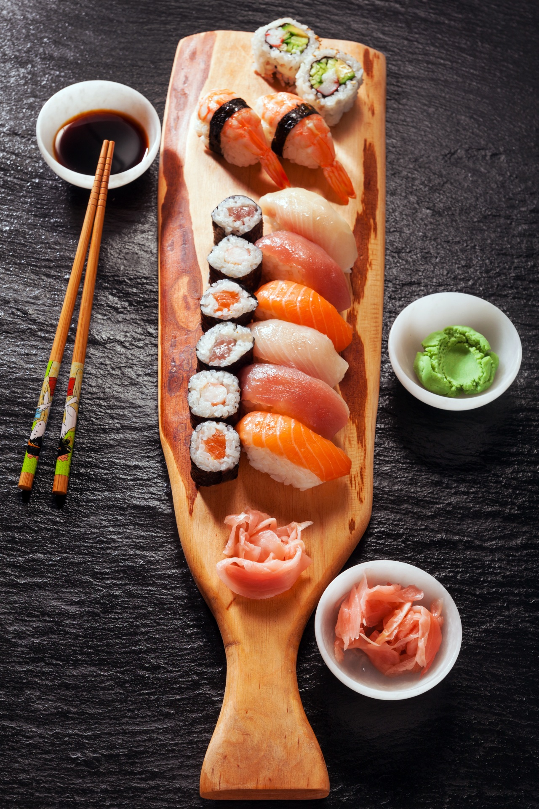
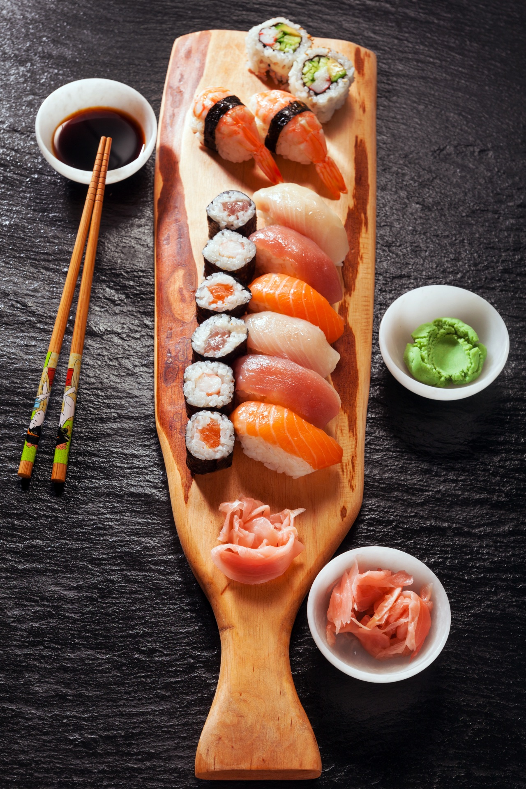

here are the top three dishes for today
 

| Name | pizza | omelette | sushi |
|---|---|---|---|
| Ingredients | Extra virgin olive oil. Cornmeal (to help slide the pizza onto the pizza stone) Tomato sauce (smooth or pureed) Firm mozzarella cheese, grated. Fresh soft mozzarella cheese, separated into small clumps. Fontina cheese, grated. Parmesan cheese, grated. Feta cheese, crumbled. | Avocado and cheddar. Roasted potatoes and Gruyere. Leftover ratatouille or other vegetable stew, alone or with a little Parmesan. Bacon and cheese, or bacon and potatoes without cheese, chives. Spinach and tomato, with or without feta. Goat cheese and herbs. | sushi rice. bamboo sushi mat. plastic wrap (cling/saran wrap) nori seaweed sheets. low-sodium soy sauce. toasted sesame seeds. Sriracha. wasabi + pickled ginger. |